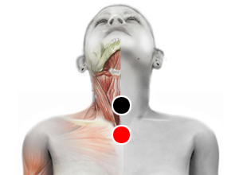

Influenza
Pares
traquea - traquea
dorsal 9 - dorsal 9
ligamento hepático - riñón (I)

Generalidades:
Trastornos nasales: catarros intensos, sinusitis, rinitis, fiebre, conjuntivitis. Checar ambos extremos del esternón.
Buscar su asociado con hongos como Cándida o Neumocistis Carini, ya que pueden ser mortales. Checar par: Carina.
El virus de la influenza tiene diversas cepas y esto en alguna medida determina la gravedad de la enfermedad, así como el estado de la persona. Los síntomas más comunes son: mucosidad, dolor de garganta, inflamación, dolor de cabeza, dolor muscular, debilidad y malestar.
Por lo regular el sistema inmune es capaz de controlar la infección en unos cuantos días. En personas inmunodeprimidas o con otras enfermedades como diabetes, cancer, sida, asma, afecciones cardiacas; pueden haber complicaciones como bronquitis, neumonía, otitis, entre otras. De agravarse la enfermedad puede llevar a la muerte.
Transmisión
De persona a persona, por vía aerea. El contagio puede ocurrir desde el primer día que se contraiga la enfermedad hasta más de 7 días después.